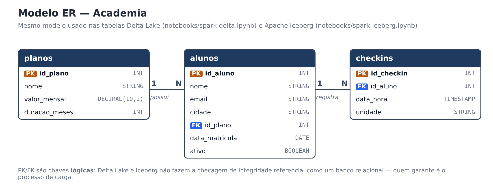

Contexto do trabalho¶
Trabalho de pesquisa da disciplina de Engenharia de Dados sobre como o Apache Spark trabalha com dois formatos de tabela abertos usados em Data Lakehouses: o Delta Lake e o Apache Iceberg.
Objetivo
Montar um único ambiente local com PySpark e Jupyter e mostrar, na prática, os comandos INSERT, UPDATE e DELETE em tabelas Delta e em tabelas Iceberg — e o que acontece por baixo (versões, snapshots e arquivos no disco).
O problema que esses formatos resolvem¶
Pense em uma planilha salva como PDF: dá para ler, mas não dá para corrigir uma célula — seria preciso gerar o PDF de novo. Um Data Lake tradicional, feito só de arquivos Parquet em pastas, tem um problema parecido: os arquivos são ótimos para leitura, mas não existe "alterar uma linha". Para corrigir um dado, reescreve-se a pasta inteira, e se o processo cair no meio, a tabela fica pela metade.
Delta Lake e Apache Iceberg resolvem isso colocando uma camada de metadados (um "índice com histórico") em cima dos arquivos Parquet. Com ela ganhamos:
UPDATE,DELETEeMERGEcomo em um banco relacional;- transações ACID (ou a alteração acontece inteira, ou não acontece);
- histórico de versões e time travel (consultar a tabela como ela era antes);
- evolução de esquema (adicionar colunas sem reescrever tudo).
Essa combinação — arquivos baratos de Data Lake + recursos de banco de dados — é o que se chama de Lakehouse.
Cenário: academia¶
Para os exemplos foi criado um cenário simples de academia:
- a academia vende planos (Mensal, Trimestral, Anual);
- cada aluno está matriculado em um plano;
- cada vez que o aluno passa na catraca, é gravado um check-in.
Modelo ER¶

O mesmo modelo em formato Mermaid:
erDiagram
PLANOS ||--o{ ALUNOS : possui
ALUNOS ||--o{ CHECKINS : registra
PLANOS {
INT id_plano PK
STRING nome
DECIMAL valor_mensal
INT duracao_meses
}
ALUNOS {
INT id_aluno PK
STRING nome
STRING email
STRING cidade
INT id_plano FK
DATE data_matricula
BOOLEAN ativo
}
CHECKINS {
INT id_checkin PK
INT id_aluno FK
TIMESTAMP data_hora
STRING unidade
}PK e FK são lógicas
Delta Lake e Iceberg não bloqueiam chave duplicada nem chave estrangeira inexistente, como faria um PostgreSQL. As chaves do diagrama documentam a intenção do modelo; quem garante a integridade é o processo de carga.
Conjunto de dados¶
O conjunto de dados foi criado pelo grupo (nenhum dataset externo foi baixado). São poucos registros,
escritos direto nos INSERT, para que o efeito de cada UPDATE e DELETE possa ser conferido a olho:
| id_plano | nome | valor_mensal | duracao_meses |
|---|---|---|---|
| 1 | Mensal | 99.90 | 1 |
| 2 | Trimestral | 269.70 | 3 |
| 3 | Anual | 899.00 | 12 |
| id_aluno | nome | cidade | id_plano | data_matricula | ativo |
|---|---|---|---|---|---|
| 1 | Ana Souza | Criciúma | 1 | 2024-01-10 | true |
| 2 | Bruno Lima | Içara | 3 | 2024-02-05 | true |
| 3 | Carla Mendes | Criciúma | 2 | 2024-03-12 | true |
| 4 | Diego Rocha | Forquilhinha | 1 | 2024-04-20 | false |
| 5 | Elisa Martins | Criciúma | 3 | 2024-05-02 | true |
| 6 | Felipe Costa | Criciúma | 2 | 2024-06-10 | true |
| id_checkin | id_aluno | data_hora | unidade |
|---|---|---|---|
| 1 | 1 | 2024-06-03 07:15 | Centro |
| 2 | 2 | 2024-06-03 18:40 | Próspera |
| 3 | 1 | 2024-06-04 07:05 | Centro |
| 4 | 3 | 2024-06-04 19:10 | Centro |
| 5 | 4 | 2024-06-05 06:50 | Próspera |
| 6 | 5 | 2024-06-05 12:30 | Centro |
| 7 | 4 | 2024-06-06 06:55 | Próspera |
| 8 | 2 | 2024-06-06 18:20 | Próspera |
Roteiro executado nos dois formatos¶
Os dois notebooks seguem exatamente o mesmo roteiro, para facilitar a comparação:
| # | Etapa | Exemplo |
|---|---|---|
| 1 | DDL | criar planos, alunos e checkins |
| 2 | INSERT | carga inicial via SQL + 1 aluno via DataFrame |
| 3 | UPDATE | reajuste de 10% no plano Mensal; Ana troca para o plano Anual |
| 4 | DELETE | aluno Diego (inativo) cancela: apaga check-ins e cadastro |
| 5 | MERGE | Carla muda de cidade (atualiza) e Gabriela se matricula (insere) |
| 6 | Histórico | versões (Delta) / snapshots (Iceberg) e time travel |
Os detalhes de cada formato estão nas páginas Delta Lake e Apache Iceberg. Os conceitos do motor de processamento estão em Apache Spark (PySpark).
Ambiente utilizado¶
| Componente | Versão |
|---|---|
| Sistema operacional | Linux Ubuntu 24.04 LTS |
| Java (OpenJDK) | 17 |
| Python | 3.11 |
| Gerenciador de projeto/pacotes | uv |
| PySpark | 3.5.3 |
| delta-spark | 3.2.0 |
| iceberg-spark-runtime-3.5_2.12 | 1.6.1 |
| JupyterLab / ipykernel | 4.x / 7.x |
| MkDocs + Material | 1.6 / 9.x |
Como reproduzir
O passo a passo completo de instalação e execução está no README do repositório. Esta documentação explica o conteúdo do trabalho; o README explica como rodar.
Integrantes¶
- Kamily Hilário das Luzes — Kauã Lucas Alves Barbosa